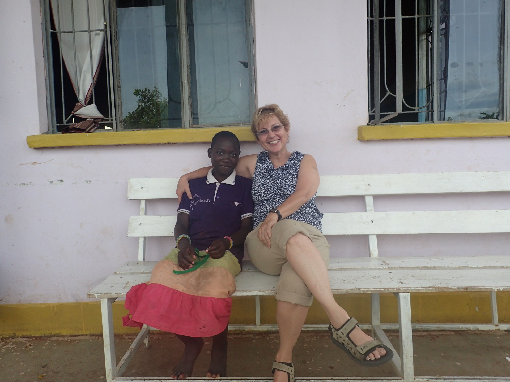

| Home | Angel House | Hope Clinic | Amazima |

Situated in the Western part of Tanzania on the continent of Africa, Angel House started as a small building with a big purpose. Now, with over five buildings, including a school, a home for the orphans, a computer lab, and a hostel. Angel House has changed the lives of hundreds of children. It is changing the lives of hundreds of children. Rahabu is one.
We met Rahabu on our first trip to Angel House. Running up with the other children, excited and disheveled, she brought a warmth to our hearts. Becky knelt down and fixed the buttons on her shirt. From that point on, anywhere we went, Rahabu followed. She did not speak any English and at that point we did not speak any Swahili, but she held our hands and we fell in love that short week.
After we left, Rahabu got malaria. Millions of children die every year from this disease. Rahabu survived, and is thankfully among the few who live.
Talents Empowered supports a number of Angel House students including Rahabu to support their studies. We encourage them and help make their futures bright. Read more about Angel House here